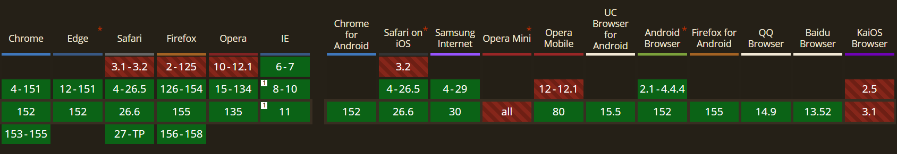

Explication
Longtemps considéré comme un hack non standard réservé à Internet
Explorer puis WebKit, la propriété zoom a enfin été
officialisée par le W3C et implémentée partout (notamment dans Firefox
126).
Contrairement à transform: scale(), qui agrandit un élément
visuellement sans changer l'espace qu'il occupe (créant des
chevauchements), zoom force le moteur de rendu à
recalculer la place réelle de l'élément dans la grille
ou le flexbox. C'est l'outil idéal pour des contrôles d'accessibilité ou
des cartes interactives qui doivent pousser leurs voisines sans les
recouvrir.
Démo Live
Survolez la carte centrale. Remarquez que les deux autres cartes s'écartent proprement pour lui faire de la place au lieu d'être recouvertes !
Code CSS
.zoom-grid {
display: flex;
gap: 1.5rem;
align-items: center;
}
.zoom-target:hover {
/* Recalcule le layout complet sans débordement incontrôlé */
zoom: 1.25;
}Compatibilité et Fallback

Fallback : Grâce à la règle @supports, on
peut proposer une transition classique avec
transform: scale() pour les navigateurs non compatibles, ou
laisser l'élément à sa taille naturelle (100%) sans bloquer la
navigation :
@supports not (zoom: 1) {
.zoom-target:hover {
transform: scale(1.15);
}
}